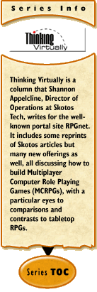

Table of Contents
The articles in Thinking Virtually are broken into topical
sections, here called "Seasons", running from 5 to 25 articles in
length each.
- Season One. Introduction to Design -
Introducing the column, the idea of MCRPGs, and how to design a game,
starting with the story elements. Columns #1-10.
- Season Two. The Elements of Good Design -
Expanding upon the design concepts of the first season, rounding
out all the most important considerations in designing a
game. Columns #11-20.
- Season Three. The Elements of Good Plot -
Discussing the question of developing plot, vastly expanding the
initial discussion of #6, "Plot Strategies". Columns
#21-30.
- Season Four. The Top Five Engineering
Problems - Talking about the five biggest problems that
impact programmers of MCRPGs. Columns #31-55.
- Season Five. Designing Strategy - A turn toward tabletop board games (and their web brethren). Columns #56-70.
Following column #70, Thinking Virtually is now on hiatus, but read
Shannon's other, still continuing column, Trials,
Triumphs & Trivialities.
Last updated: November 18, 2005
Season One: Introduction to Design
The first ten-part series for Thinking Virtually at RPGnet,
introducing the column, the idea of MCRPGs, and how to design a game,
starting with the story elements.
Part One: Introducing the Column
The first few columns introduce myself, MCRPGs and Tabletop RPGs (RPGs).
- #1. Twenty-First Century Roleplaying: An Introduction (2/26/01) - Who am I? What is that column? What are MCRPGs and TRPGs?
- #2. Coca-Cola or Pepsi? (3/5/01) - What are the benefits of MCRPGs vs. TRPGs?
Part Two: The Elements of Good Storytelling
A discussion of one of the most basic aspects of design: the elements
of good storytelling which are important in any type of fiction.
- #3. The
Elements of Good StoryTelling (3/12/01) - What elements are
crucial to any type of story?
A reprint of The
Elements of Good StoryTelling #1 by Kimberly Appelcline.
- #4. Creating
Vivid Characters (3/20/01) - Making characters in fiction
truly three-dimensional.
A reprint of The
Elements of Good StoryTelling #2 by Kimberly Appelcline.
- #5. Writing
Dynamic Settings (3/26/01) - Causing settings to come alive in
fiction.
A reprint of The
Elements of Good StoryTelling #3 by Kimberly Appelcline.
- #6. Plot
Strategies (4/2/01) - Laying out different ways to structure
plots in fiction.
A reprint of The Elements
of Good StoryTelling #4 by Kimberly Appelcline.
- #7. Imagining
Backstory (4/9/01) - Setting up backstory in your fiction.
A reprint of The Elements of
Good StoryTelling #5 by Kimberly Appelcline.
- #8. StoryTelling
in RPGs, Part One (4/16/01) - Applying the rules of setting
and characters to roleplaying games.
- #9. StoryTelling
in RPGs, Part Two (4/23/01) - Applying the rules of plot and
backstory to roleplaying games.
Part Three: Introducing the Column (Redux)
This last column lays out the three focuses of the column: design,
development, and engineering.
- #10. DEaD Again: A Statement of Purpose (4/30/01) - An overview of the column to come.
Season Two: The Elements of Good Design
The second ten-part series in Thinking Virtually expands
upon the design concepts of the first season, rounding out all the most
important considerations in designing a game.
Part One: Laying the Virtual Groundwork
An expansion of some of the ideas presented in "The Elements of Good
StoryTelling", describing the design process, from the basic ideas
onward.
- #11. Ideas
(5/7/01) - Discussing where ideas come from.
A reprint of Building Stories,
Telling Games #1 by Travis Casey.
- #12. Development
(5/14/01) - Tracking an idea, through design, into development.
A reprint of Building Stories,
Telling Games #2 by Travis Casey.
- #13. Cliche Patterns
(5/21/01) - Describing cliches, and how you should avoid them in design.
A reprint of Building Stories,
Telling Games #5 by Travis Casey.
Part Two: Defining MCRPGs
Discussions of what MCRPGs are, how they've been built to date, and
how they differ from other mediums. Expanding on some of the ideas in
"Introducing the Column".
- #14. Thirty-one Flavors?
(5/28/01) - Models for roleplaying via computer in the past and future.
- #15. The State of the Art
(6/4/01) - Realities for roleplaying via computer in the present.
- #16. The
Thing in Itself, Part One (6/11/01) - Comparing MCRPGs and
tabletop RPGs.
A reprint of Building Stories,
Telling Games #3 by Travis Casey.
- #17. The Thing in Itself, Part Two (6/18/01)
- Comparing MCRPGs and single-person text adventures.
A reprint of Building Stories,
Telling Games #4 by Travis Casey.
Part Three: Final Elements of Design
Conclusive thoughts on design, discussing a number of important topics
to think about when you're putting together a game.
- #18. The
Game Is what the Game Is (7/23/01) - Designing game systems to
encourage game play.
A parallel article to Trials, Triumphs & Trivialities #38 by Shannon Appelcline.
- #19. Mass Hysteria (7/3-/01) - Choosing your market carefully.
A reprint of Biting the Hand
v11n1 by Jessica Mulligan.
- #20. From
Design to Development: An Epilogue (8/6/01) - A hyperlinked
summary of discussions of design, from #1 to #19.
Season Three: The Elements of Good Plot
The third ten-part Thinking Virtually series moves on to
the question of developing plot, vastly expanding the initial
discussion of #6, "Plot Strategies".
Part One: Movies--A Structure for Plot
Initial thoughts about how plots should be structured, using movies as
an example.
- #21. Movies:
A Structure for Plot, Part One (8/13/01) - A description of
the movie plot structure.
An expansion of Trials, Triumphs &
Trivialities #22 by Shannon Appelcline.
- #22. Movies:
A Structure for Plot, Part Two (8/20/01) - Using
a movie plot structure for an online game.
An expansion of Trials, Triumphs &
Trivialities #23 by Shannon Appelcline.
- #23. Movies:
A Structure for Plot, Part Three (8/27/01) - How
movie plot structure should be adapted for online games.
A rewrite of Trials, Triumphs &
Trivialities #24 by Shannon Appelcline.
Part Two: Episodic Plots
Expanging ideas about plot into episodic mediums, building toward an
understanding of plot in MCRPGs.
- #24. Episodic
Plots, Part One: Television (9/10/01) - Looking at how
television shows use character and plot arcs.
- #25. Episodic
Plots, Part Two: Comic Books (9/17/01) - Expanding on
character and plots arcs in the comic book medium.
- #26. Episodic
Plots, Part Three: RPGs (9/24/01) - Campaign settings and evolving worlds.
- #27. Episodic
Plots, Part Four: MCRPGs (10/1/01) - Missing mediums and a
summary of lessons learned.
Part Three: Multiplayer Interactive Plots
The MCRPG medium has some unique issues because it is multiplayer and
interactive. These articles discuss some of them.
- #28. Many
Users, Many Plots (10/15/01) - How do you support multiple
users with multiple gamemasters?
- #29. Changing
Stories, Changing Plots (10/22/01) - How do you support an
episodic medium? You change things.
A rewrite of Trials, Triumphs &
Trivialities #21 by Shannon Appelcline.
- #30. Revising
Stories, Deriding Plots (10/29/01) - How do you revise
and why are plots bad?
Season Four: The Top Five Engineering Problems
This fourth Thinking Virtually series provides a broad
overview of five of the biggest problems that impact MCRPG engineers,
offering plenty of alternative views on the subjects.
Part One: An Introduction to Engineering
Overviewing both engineering and the top five problems.
- #31. Engineering
MCRPGs: An Introduction (11/12/01) - What does engineering mean, anyway?
- #32. Five
Things I Hate About You: Engineering Problems (11/19/01) -
Outlining the five biggest issues in engineering MCRPGs.
Part Two: The Fun Factor
The first engineering problem: How do you create a game people will
enjoy?
- #33. The
Fun Factor (11/26/01) - Why are some games fun and others
boring?
- #34. The Psychology of Rewards (12/3/01) - What rewards
can you offer players and how should you do so?
- #35.
Just Give me a Game, Please (12/10/01) - How ideas about art
may overshadow the fun of a game.
A reprint of Biting the Hand
v11n7 by Jessica Mulligan.
- #36.
What's Entertainment? (12/17/01) - Defining art and
entertainment.
A reprint of Building Stories,
Telling Games #15 by Travis S. Casey.
- #37.
The Case for Art (12/24/01) - Another rebuttal for art, by
Raph Koster.
A reprint of Biting the Hand
v11n9 by Jessica Mulligan.
Part Three: The Realism Rathole
The second engineering problem: how do you balance a game that's
realistic with one that's enjoyable?
- #38. The
Realism Rathole (1/7/02) - How realistic should a game
be?
- #39. Dirty
Words: Keepin' It Real (1/14/02) - Definitions of realism and
when to use them.
A reprint of Building Stories,
Telling Games #18 by Travis S. Casey.
- #40. Consistent
Lines (1/21/02) - The power of consistency and different
realities.
A reprint of MetaStatic
#18 and MetaStatic
#15 by Sam Witt.
Part Four: The Competition Conundrum
The third engineering problem: how do you support competition
without angering players?
- #41. The
Competition Conundrum (1/28/02) - An overview of competition,
from PKing to leveling.
- #42. Measuring
Hate (2/4/02) - The questions of competition and player
villainry.
A reprint of MetaStatic
#24 and MetaStatic
#4 by Sam Witt.
- #43. Dirty
Words: PK, Part One (2/11/02) - Defining PK, and looking at
solutions to date.
A reprint of Building Stories,
Telling Games #19 by Travis S. Casey.
- #44. That
Darned PvP Stuaff Again (2/18/02) - Discussing the myths of
PVP.
A reprint of Biting the Hand
v11n12 by Jessica Mulligan.
- #45. Dirty
Words: PK, Part Two (2/25/02) - Grief players and PKing.
A
reprint of Building Stories,
Telling Games #20 by Travis S. Casey.
Part Five: The Balance Bother
The fourth engineering problem: how do you balance different
players in a fair way?
- #46. The
Balance Bother (3/4/02) - An overview of balance, nerfing, and
the different needs of different games.
- #47. The
Digital Ceiling (3/11/02) - How to do away with the experience
treadmill.
A reprint of MetaStatic
#9 by Sam Witt.
- #48. The
The Myth of Balance (3/18/02) - Why characters don't need to
be balanced in an MCRPG.
A reprint of MetaStatic
#8 by Sam Witt.
- #49. Dirty
Words: Balance (3/25/02) - Looking at what all can be
balanced.
A reprint of Building Stories,
Telling Games #22 by Travis S. Casey.
Interlude: Humor in Gaming
An April 1st interlude on the topic at hand.
- #50. If
I Ran the Zoo: An Interlude (5/1/02) - So, how should
really resolve online game problems?
Part Six: The Dynamic Dilemma
The fifth engineering problem: how do you keep a perpetual game
fresh and new?
- #51. The
Dynamic Dilemma, Part One (5/15/02) - Outlining the problem of
dynamism.
A minor rewrite of Trials, Triumphs &
Trivialities #26 by Shannon Appelcline.
- #52. The
Dynamic Dilemma, Part Two (5/22/02) - Dynamism through object
recreation.
A reprint of Trials, Triumphs &
Trivialities #28 by Shannon Appelcline.
- #53. The
Dynamic Dilemma, Part Three (5/29/02) - Dynamism through new
object creation.
A reprint of Trials, Triumphs &
Trivialities #29 by Shannon Appelcline.
- #54. Finite
Games, Finite Characters (5/6/02) - Creating dynamism by
making things finite.
A reprint of MetaStatic
#20 and MetaStatic
#21 by Sam Witt.
Part Seven: A Conclusion to Engineering
A summing up of what has come before
- #55. Five
Things I Love About You: Solving Engineering Problems (5/13/02)
- Summarizing solutions from the previous 25 articles.
Season Five: Designing Strategy
This fifth Thinking Virtually leaves behind roleplaying
discussions and instead turns to strategy games. It was entirely a reprint of relevant topics from TT&T.
Part One: Strategic Introductions
Providing an overview of the toic, including both tabletop and web games.
- #56. Strategic
Introductions: Tabletop Games (1/10/03) - An overview of
tabletop games.
A reprint of Trials, Triumphs &
Trivialities #101 by Shannon Appelcline.
- #57. Designing Strategy: The Components (1/17/03) - Environments, tokens, and markers.
A reprint of Trials, Triumphs &
Trivialities #102 by Shannon Appelcline.
- #58. Designing Strategy: The Gameplay (1/24/03) - How component interaction ultimately creates gameplay.
A reprint of Trials, Triumphs &
Trivialities #103 by Shannon Appelcline.
- #59. Strategic
Introductions: Web Games (1/31/03) - Comparing web games to their tabletop brethren.
A reprint of Trials, Triumphs &
Trivialities #104 by Shannon Appelcline.
Part Two: Designing Strategy
The core articles of this series step through the elements that make up a strategy game.
- #60. Designing Strategy: Decision Sets (2/7/03) - How options forming decisions sets can make or break games.
A reprint of Trials, Triumphs &
Trivialities #105 by Shannon Appelcline.
- #61. Designing Strategy: The Random Factor (2/14/03) - Types of randomness in games, and why to use them.
A reprint of Trials, Triumphs &
Trivialities #106 by Shannon Appelcline.
- #62. Anatomy of a Game: The Settlers of Catan (2/21/03) - Components, gameplay, decisions, and randomness in Catan.
A reprint of Trials, Triumphs &
Trivialities #107 by Shannon Appelcline.
- #63. Designing Strategy: Activity & Timing (2/28/03) - Gameplay activities & evolutionary design.
A reprint of Trials, Triumphs &
Trivialities #108 by Shannon Appelcline.
- #64. Designing Strategy: Victory & Balance (3/7/03) - Balancing games & winning them.
A reprint of Trials, Triumphs &
Trivialities #109 by Shannon Appelcline.
- #65. Designing Strategy: Hidden Information (3/21/03) - Why and how to hide information in tradtional strategy games.
A reprint of Trials, Triumphs &
Trivialities #112 by Shannon Appelcline.
- #66. Designing Strategy: A Conclusion (4/11/03) - Summarizing everything to date.
A reprint of Trials, Triumphs &
Trivialities #113 by Shannon Appelcline.
Part Three: Strategic Codas
Some final thoughts about strategy & some more specific insights into categories of gameplay.
- #67. Strategic Insights: Trading Games (4/25/03) - Trades and auctions in strategy games.
A reprint of Trials, Triumphs &
Trivialities #116 by Shannon Appelcline.
- #68. Strategic Insights: Card Games (5/09/03) - Different types of card games.
A reprint of Trials, Triumphs &
Trivialities #117 by Shannon Appelcline.
- #69. Strategic Coda: The RPG Connection (5/23/03) - How strategy design can help RPGs.
A reprint of Trials, Triumphs &
Trivialities #119 by Shannon Appelcline.
- #70. Strategic Coda: The Web Connection (6/06/03) - Unique problems in web-based strategy games.
A reprint of Trials, Triumphs &
Trivialities #121 by Shannon Appelcline.
Part Four: Uncollected Articles
The following TT&T articles cover the same topics as season
five of Thinking Virtually but were never republished there
because the RPGnet column was put on hiatus.
- Designing Strategy: Expansions & Variations - How to produce a variation of a strategy game.
Printed in Trials, Triumphs &
Trivialities #127 by Shannon Appelcline.
- Strategic Insights: Auction Games - A look at auctions separate from trade games.
Printed in Trials, Triumphs &
Trivialities #144 by Shannon Appelcline.
- Strategy & Tactics - Defining different types of decisions.
Printed in Trials, Triumphs &
Trivialities #150 by Shannon Appelcline.
- Strategic Insights: Connection Games - Categorizing trains & other connections.
Printed in Trials, Triumphs &
Trivialities #154 by Shannon Appelcline.
- Strategic Insights: Bluffing Games - Bluffing about victory & actions.
Printed in Trials, Triumphs &
Trivialities #155 by Shannon Appelcline.
- Designing Strategy: The Auction Grand Unification Theory - All your games belong to auction.
Printed in Trials, Triumphs &
Trivialities #161 by Shannon Appelcline.
- Strategic Insights: Majority Control Games - A different type of area control.
Printed in Trials, Triumphs &
Trivialities #162 by Shannon Appelcline.
It's likely that these articles will at some point be revised and
reprinted in Shannon's other other series, Gone Gaming or in a
published book.
|